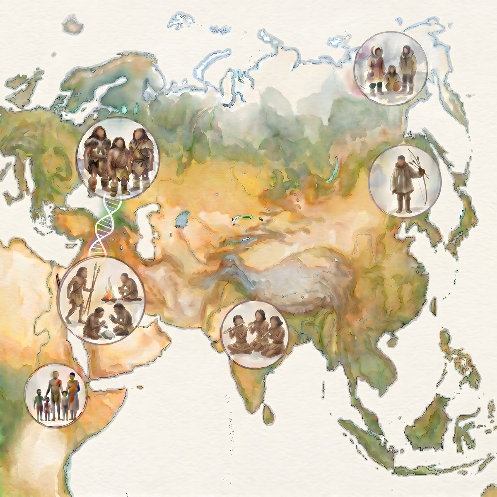
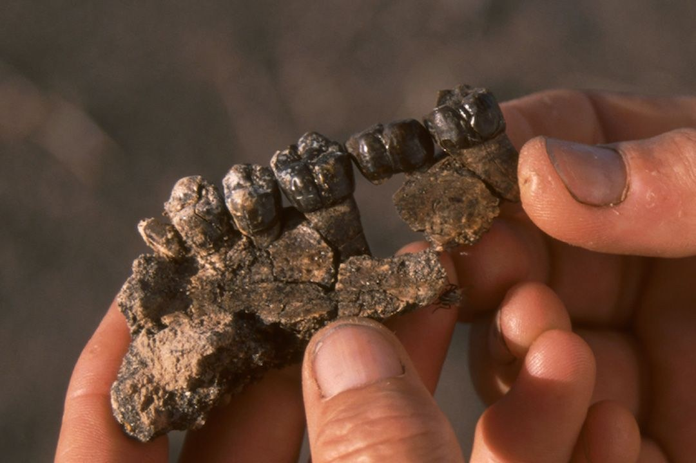
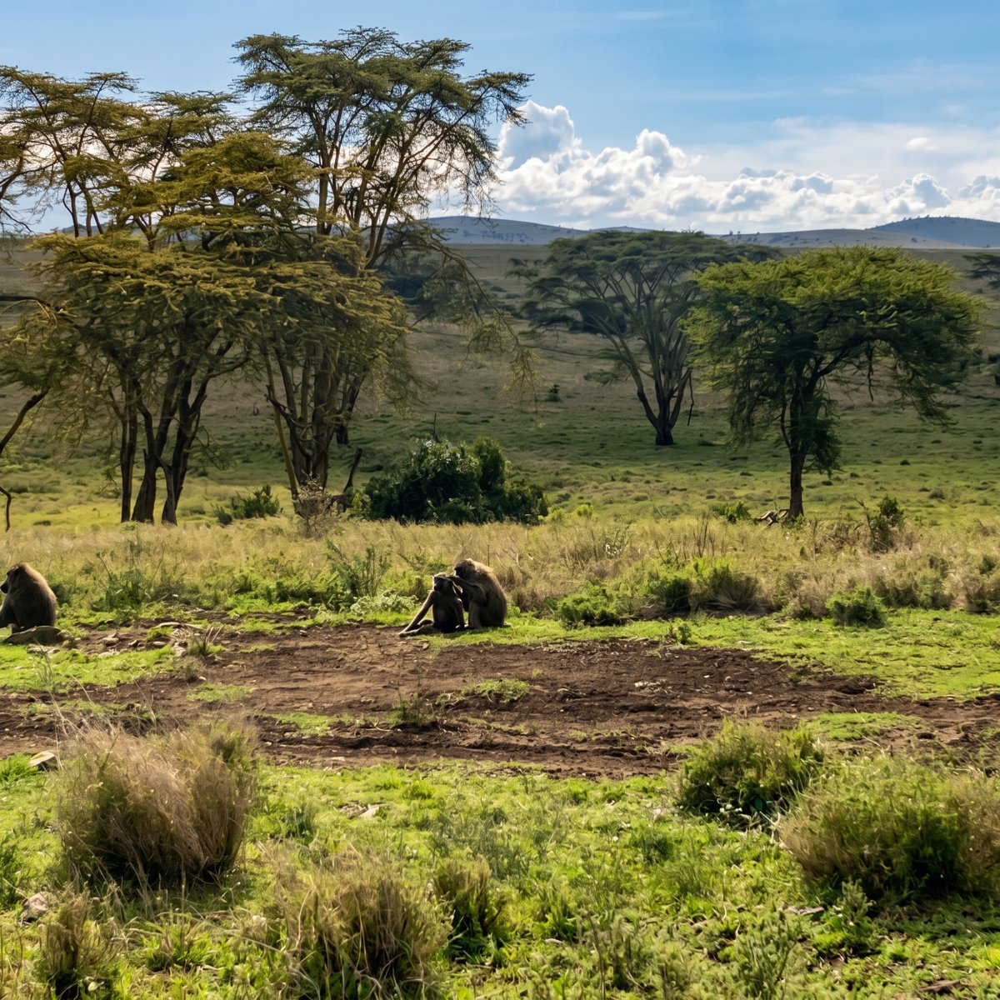
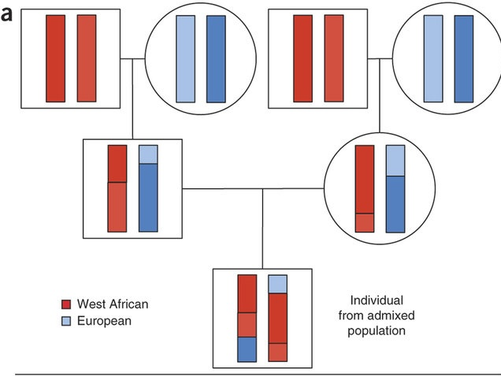
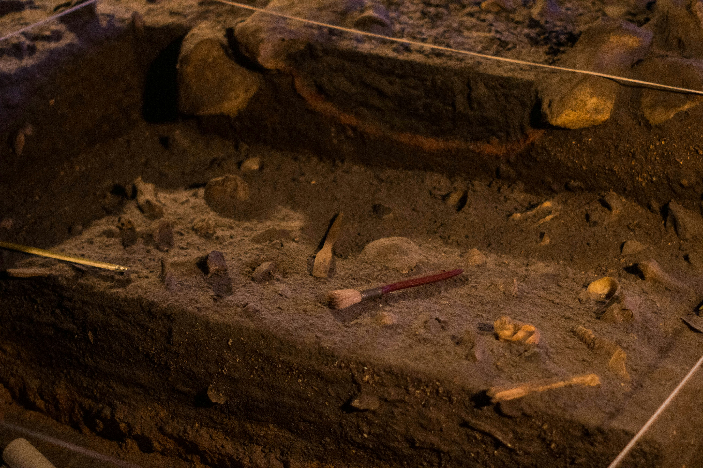

Current Projects
Below, the main projects the lab is working on at the moment, alongside a global network of collaborators. Please feel free to get in touch if you are interested in any of these topics or have any questions, and see Join the lab if you would like to work on them with us!

Interactions between Neanderthals and Homo sapiens
We investigate Neanderthal population dynamics and how, where and when Neanderthals and Homo sapiens met and interacted, and what these encounters meant for both populations.
Lab member: Zélie Solan de Renty

Modelling genotype-phenotype dynamics
We develop spatially explicit models to understand how genetic variation translates into phenotypic diversity, and how demography, climate and selection shape this relationship across space and through time.

Climate-driven selection in baboons
In collaboration with Cosimo Posth, we study how past climate change has shaped natural selection in baboons, a primate found across a remarkably wide range of African environments.
Lab member: Amanda Solbirk Schott

Admixture mapping of African hunter-gatherer ancestry components
In collaboration with the Ioannidis Lab at Stanford University we use large-scale genomic datasets to explore the contributions of hunter-gatherer ancestry to complex traits and health outcomes.

Climate Informed Spatial Genetic Modelling (CISGeM)
Using paleoclimatic, genetic, archaeological and fossil data, we model how climate shaped human genetic and phenotypic diversity in different places and time periods.

Mobility and genetic diversity in Central Africa
We examine how patterns of mobility influence genetic diversity and population structure among Central African hunter-gatherers.

Integrating archaeological and genomic data to study cultural evolution
In collaboration with the Human Paleosystems Group at the Max Planck Institute of Geoanthropology, we integrate genomic and archaeological data to understand how changing population dynamics shape cultural evolution.

Mobility and settlement in the archaeological record
Alongside Prof. Matt Grove and Dr. James Blinkhorn from the University of Liverpool, we develop methods to recover signals of mobility, aggregation, and dispersal from lithic assemblages and site structures.

Settlement transitions in East Africa
Together with Dr Olympia Campbell from the Institute for Advanced Study in Toulouse, we investigate the causes and consequences of changes in mobility and spatial organization in Northern Kenya.

Evolutionary origins of central place foraging
Together with Dr Ketika Garg from Caltech, we use computational models to understand how central place foraging may have evolved in the genus Homo.